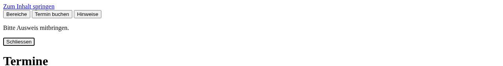
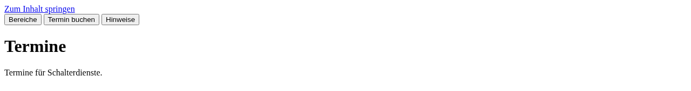
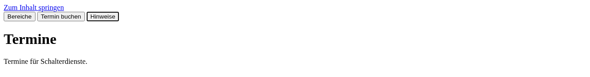
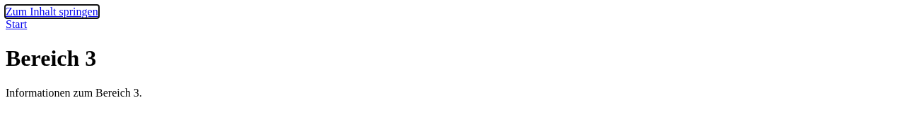
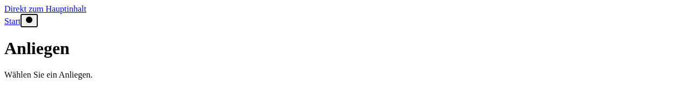

A/B/C-Vergleich: algorithmisch, lokales LLM, lokales LLM + Mistral
Synthetische Entwicklungs-Fixtures (dev-k1, dev-k2, dev-k3; offengelegt, nicht zurückgehalten). Lauf am 29.10.2026 auf Nebu (lokaler Rechner), 120-Minuten-Fenster.
synthetisch Entwicklungs-Fixtures keine öffentlichen Seiten Modell-Beurteilung ≠ menschliche Freigabe Mistral: 0,0034 von 5 USD
Kurz: Der algorithmische Arm A fand in beiden Segmenten alle 4 gesetzten Barrieren (4/4), in je etwa einer Sekunde pro Sitzung. Das lokale Modell (qwen3:1.7b, nur CPU) fand allein (B) und mit Mistral-Beratung (C) keine (0/4 in beiden Segmenten): Es sah die unbesuchten Unterseiten, verliess aber nie die Startseite, wiederholte dieselbe Aktion und lief in Zeitlimits oder kopierte das Beispiel aus der Anleitung. Eine Reparatur (Wiederholungs-Sperre) griff technisch, änderte das Ergebnis aber nicht: ein negatives Ergebnis. Ein Fall (Fokus nach Escape im zweiten Dialog) wurde in einem frischen Browser reproduziert, an einer Kopie der Seite repariert und erfolgreich nachgetestet.
Segment s1: ohne Reparatur (9 von 9 Sitzungen)
Gleiche Grenzen für alle Arme: 12 Entscheidungen, 24 Browser-Schritte, 8 Seiten, 180 s je Sitzung, 30 s je Anfrage. Harness-Flags identisch (sichtbare Frontier, Abschluss-Buchhaltung, report_candidate). C: höchstens 2 Mistral-Beratungen, ausgelöst nur nach 3 Aktionen ohne Zustandsänderung.
| Bedingung | Modell(e) | Sitzungen mit Abschlussvorschlag / geplant | Sitzungsende | Verifizierte Barrieren | Behauptungen: belegt / widerlegt / unzureichend | Vorzeitiger Abschluss | Seiten besucht / entdeckt | Prüfungen ausgeführt / gesamt | Modellaufrufe (lokal) | Zeit (s) | Mistral (USD) |
|---|---|---|---|---|---|---|---|---|---|---|---|
| A · algorithmisch | keins (Frontier-Scheduler + Regeltabelle) | 3 / 3 | completed: 3 | 4 / 4 | 4 / 0 / 0 | 0 | 9/9 | 21/21 | 31 | 3 | – |
| B · lokales LLM | qwen3:1.7b (Ollama, CPU, lokal) | 0 / 3 | invalid_model_output: 1, timeout: 2 | 0 / 4 | 0 Behauptungen | 0 | 3/9 | 6/21 | 24 | 403 | – |
| C · lokales LLM + Mistral | qwen3:1.7b lokal + mistral-small-2603 (≤2 Konsultationen) | 1 / 3 | completed: 1, invalid_model_output: 1, timeout: 1 | 0 / 4 | 0 / 1 / 0 | 0 | 3/9 | 7/21 | 19 | 313 | 0.0008 |
Mistral-Ledger dieses Segments: 2 Aufrufe, 4430 / 258 Tokens, geschätzt 0.0008 USD (Preise laut Konfiguration; maßgeblich ist die Rechnung). Behauptungen wurden blind (anonymisierte Arme) von einem frischen Claude-Kontext beurteilt und danach mit der Fixture-Wahrheit abgeglichen.
Segment s2: mit Reparatur «Wiederholungs-Sperre» (9 von 9 Sitzungen)
Einzige Änderung gegenüber s1: identische inspect/capture-Aktionen im unveränderten Seitenzustand werden abgelehnt (alle Arme). Es handelt sich um eine Werkzeug-Änderung, nicht um ein anderes Modell.
| Bedingung | Modell(e) | Sitzungen mit Abschlussvorschlag / geplant | Sitzungsende | Verifizierte Barrieren | Behauptungen: belegt / widerlegt / unzureichend | Vorzeitiger Abschluss | Seiten besucht / entdeckt | Prüfungen ausgeführt / gesamt | Modellaufrufe (lokal) | Zeit (s) | Mistral (USD) |
|---|---|---|---|---|---|---|---|---|---|---|---|
| A · algorithmisch | keins (Frontier-Scheduler + Regeltabelle) | 3 / 3 | completed: 3 | 4 / 4 | 4 / 0 / 0 | 0 | 9/9 | 21/21 | 31 | 3 | – |
| B · lokales LLM | qwen3:1.7b (Ollama, CPU, lokal) | 0 / 3 | invalid_model_output: 1, timeout: 2 | 0 / 4 | 0 Behauptungen | 0 | 3/9 | 6/21 | 24 | 409 | – |
| C · lokales LLM + Mistral | qwen3:1.7b lokal + mistral-small-2603 (≤2 Konsultationen) | 0 / 3 | invalid_model_output: 1, timeout: 2 | 0 / 4 | 0 Behauptungen | 0 | 3/9 | 7/21 | 23 | 404 | 0.0017 |
Mistral-Ledger dieses Segments: 4 Aufrufe, 9137 / 470 Tokens, geschätzt 0.0017 USD (Preise laut Konfiguration; maßgeblich ist die Rechnung). Behauptungen wurden blind (anonymisierte Arme) von einem frischen Claude-Kontext beurteilt und danach mit der Fixture-Wahrheit abgeglichen.
Fälle
Alle Bildschirmfotos sind echte Aufnahmen aus einem frischen, abgeschotteten Browser (nur Tastatur, eigener Kontext je Fall), aufgenommen nach den Bewertungsläufen. Die Fixtures selbst wurden nicht verändert; die Reparatur wurde an einer Kopie der Seite vorgeführt.
Fall 1 · Fokus geht nach Escape verloren (dev-k3, «Hinweise»-Dialog), mit Reparatur und Nachtest
Aufgabe: Eine Person bucht per Tastatur einen Schaltertermin und öffnet vorher die «Hinweise».
Einschränkung: Nur lesend erkunden; keine Formulare absenden.



Frischer Browser, nur Tastatur (runs/abc/repro-final/*/repro.json): Kontrolle «Termin buchen» (#c2): Enter → Fokus «Schliessen» → Escape → Fokus #c2 (zurückgegeben) «Hinweise» (#c3), Original: Enter → Fokus «Schliessen» → Escape → Fokus body (NICHT zurückgegeben) «Hinweise» (#c3), repariert: Enter → Fokus «Schliessen» → Escape → Fokus #c3 (zurückgegeben) Reparatur: Escape-Behandlung des zweiten Dialogs gibt den Fokus wie beim ersten an den Auslöser zurück (eine Zeile im Fixture-Skript).
- A: in s1 und s2 gefunden: Dialog über #c3 geöffnet, Escape, Fokus auf body belegt (ev_5–ev_7); vom blinden Beurteiler als «belegte Beobachtung» eingestuft.
- B: nicht gefunden: blieb auf der Startseite, erfasste dieselbe Schaltfläche bis zu 10-mal, öffnete den zweiten Dialog nie; Zeitlimit.
- C: nicht gefunden: Mistral schlug zweimal «activate» vor (Bereiche, Termin buchen), nie den zweiten Dialog; die lokale Entscheidung blieb ohne Fortschritt; Zeitlimit.
Warum ein guter Pilotfall: Das Verhalten ist nur durch Bedienen sichtbar, nicht im statischen HTML; ein Kontroll-Dialog auf derselben Seite verhält sich korrekt, sodass «erster Dialog ok» nicht für den zweiten gilt. Noch offen: Wie sich der Fokusverlust in einem echten Screenreader anfühlt, ist hier nicht geprüft (keine AT-Sitzung).
Befund A: runs/abc/s1-…/r1/dev-k3/A (cand_1), s2 ebenso. Reproduktion (Bilder dieses Berichts): runs/abc/repro-final/original-2026-10-29T18-31-53-666Z und repaired-2026-10-29T18-31-55-404Z, Code 87efc99 (in repro.json festgehalten); eine frühere Reproduktion mit gleichem Ergebnis liegt unter runs/abc/repro/.
Fall 2 · Sprunglink ohne Ziel auf der dritten von vier Unterseiten (dev-k1)
Aufgabe: Eine Person springt mit «Zum Inhalt springen» direkt zur Information des Bereichs.
Einschränkung: Nur lesend; vier gleich aussehende Unterseiten, nur eine ist defekt.

DOM (frischer Browser): href="#inhalt-x" → Ziel-Element: keins. Reparierte Kopie: href="#inhalt" → <main id="inhalt">. Hinweis: Auf dieser kurzen Seite gibt es nach dem Hauptinhalt kein weiteres fokussierbares Element; der Tastatur-Weiterlauf ist deshalb nicht aussagekräftig, die Ziel-Prüfung schon.
- A: alle 5 Seiten besucht, auf der dritten Unterseite das fehlende Ziel belegt (s1 und s2).
- B: 1 von 5 Seiten besucht. In s2 standen die vier unbesuchten Seiten (inklusive der defekten) im Frontier und in legal.navigate; das Modell versuchte trotzdem fünfmal dieselbe abgelehnte Erfassung.
- C: wie B; in s1 reichte es nach einer Beratung eine erfundene Behauptung ein (siehe Fall 3).
Warum ein guter Pilotfall: Er bildet das Muster aus Versuch 3 nach: Wer eine funktionierende Schwesterseite prüft, hat die defekte nicht geprüft. Die Frontier macht das Offene sichtbar, aber das kleine lokale Modell nutzt die Sicht nicht. Noch offen: echte Navigationsmuster einer Gemeindeseite.
Funnel: runs/abc/s1-…/funnel.json, s2-…/funnel.json (dev-k1). Wiederholungs-Ablehnungen: s2 dev-k1 B/C je 5 × repeated_in_same_state.
Fall 3 · Unbenannte Icon-Schaltfläche (dev-k2) und eine kopierte, erfundene Behauptung
Aufgabe: Eine Person mit Screenreader will herausfinden, wozu die Schaltfläche neben «Start» dient.
Einschränkung: Nur lesend.

ariaSnapshot(header):
- banner:
- link "Start":
- /url: /dev-k2/index.html
- button
- A: gefunden (ev_4, Ziel button#b-s4 ohne Namen), dazu der zweite Defekt auf dev-k2 (Sprungziel ist kein main); beide vom Beurteiler als belegt eingestuft.
- B: nicht gefunden: in s1 und s2 kopierte das Modell nach drei Schritten das Beispiel aus der Anleitung wortwörtlich («search-btn», «Menu revealed two service pages»), bis die Ausgabe abbrach (ungültiges JSON).
- C: ebenso auf dev-k2. Auf dev-k1 (s1) wurde dieselbe Beispiel-Behauptung als Befund eingereicht; der blinde Beurteiler stufte sie als durch die eigene Evidenz widerlegt ein.
Warum lehrreich: Die gefährlichste Fehlerart ist nicht das Übersehen, sondern eine plausibel klingende, erfundene Behauptung. Die Evidenzbindung (zitierte ev-IDs, Ziel-Element) machte sie prüfbar und widerlegbar. Noch offen: Ob ein Screenreader hier «Schaltfläche» ohne Namen ansagt, wurde nicht mit echter AT geprüft.
Widerlegte Behauptung: s1 dev-k1 C, cand_1 (Beurteilung s1-judgment.json). Ungültige Ausgaben: s1/s2 dev-k2 B und C, Schritt 2.
Was jeder Ansatz beigetragen hat
- A · algorithmisch: verlässliche Abdeckung (alle Seiten, alle Prüfungen) und belegte Befunde für alle 4 gesetzten Barrieren, ohne Modellkosten. Grenze: findet nur, was seine Regeln kennen; sein «vollständig» bezieht sich nur auf die eigenen Prüfungen.
- B · lokales LLM: lief vollständig lokal und gültig formatiert in den meisten Schritten, aber ohne Erkundung über die Startseite hinaus: 0 Befunde, keine wahren, eine erfundene Beispiel-Kopie (abgebrochen). Bei 18 s je Entscheidung auf CPU reicht das 180-s-Fenster für etwa 9 Entscheidungen.
- C · lokal + Mistral: 8 Beratungen für 0,0034 USD, jede gültig und in 1,1–2,2 s; sie deuteten die Schleife richtig und schlugen legale Aktionen vor, änderten aber nichts am Ergebnis. Das lokale Modell bleibt der Engpass.
- Claude (Koordination und Beurteilung): kein vierter Testarm: baute die Verdrahtung, beurteilte anonymisierte Evidenz blind und glich danach mit der Fixture-Wahrheit ab (alle Urteile stimmten mit der Wahrheit überein). Keine Freigabe, keine Veröffentlichung.
Grenzen
- Drei offengelegte Entwicklungs-Fixtures mit je 1–2 gesetzten Barrieren und je einer Wiederholung pro Segment: keine Aussage über Zuverlässigkeit, Neuheit oder reale Gemeindeseiten.
- Lokale Inferenz nur auf CPU (die installierte Ollama-Version hat kein Backend für die Arc-B60-GPU); ein schnelleres oder grösseres lokales Modell könnte anders abschneiden. qwen3:4b wurde vorab geprüft und verworfen (gab die Beobachtung zurück statt einer Aktion).
- Blind-Beurteilung durch frische Claude-Kontexte ist modellgestützte Forschungsbewertung, keine menschliche Entscheidung. In s1 war Arm A an seinen festen Textbausteinen erkennbar; für s2 wurden URLs und feste Sätze entfernt, die Formulierung von A-Befunden bleibt erkennbar.
- In C bekam der lokale Aufruf in Beratungsrunden nur die Restzeit der 30 s (Beratung 1,1–2,2 s); es trat dadurch kein Abbruch auf, offengelegt laut Code-Review.
- «Verifiziert» heisst: deterministisch mit der Fixture-Wahrheit abgeglichen und vom blinden Beurteiler als belegt eingestuft. Kein Befund wurde freigegeben oder veröffentlicht.
Nächster Schritt
Was den Schritt rechtfertigt: Wenn B oder C auf mindestens 2 der 3 Fixtures die defekte Unterseite bzw. den zweiten Dialog tatsächlich ansteuert (Funnel «selected/visited» = ja) und mindestens eine gesetzte Barriere belegt meldet, ohne erfundene Behauptung, lohnt sich ein begrenzter Partner-Pilot mit A als Basis und B/C als Ergänzung. Bleibt es bei 0, ist A allein der Weg für diese Klasse.
Erzeugt mit scripts/abc_report.py aus versiegelten Läufen. Code: Runner f003529 (s1), ae1ecc9 (s2); Bericht/Review-Fixes siehe PR. Rohdaten archiviert ausserhalb von git (abc-runs-archive.tar.gz, SHA-256 in ARCHIVE.sha256). Alle Seiten sind synthetisch; keine Aussage über reale Websites, Screenreader-Erfahrung oder WCAG-Konformität.